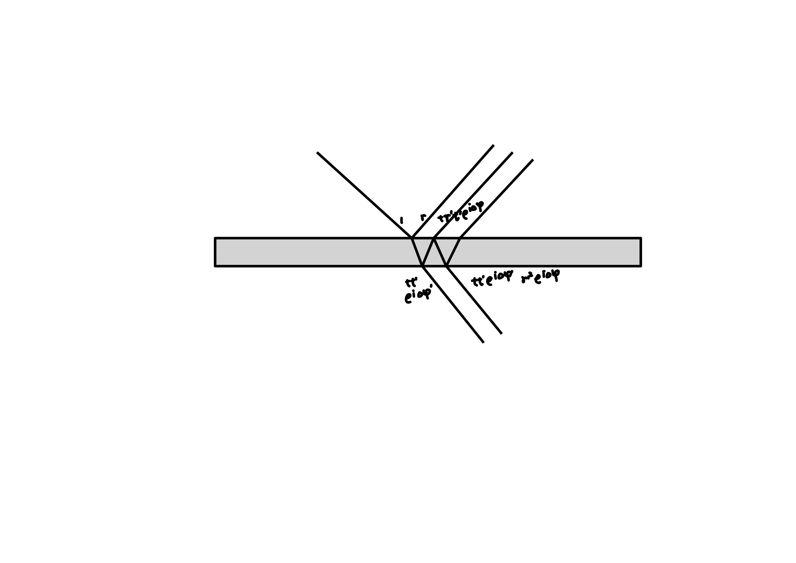
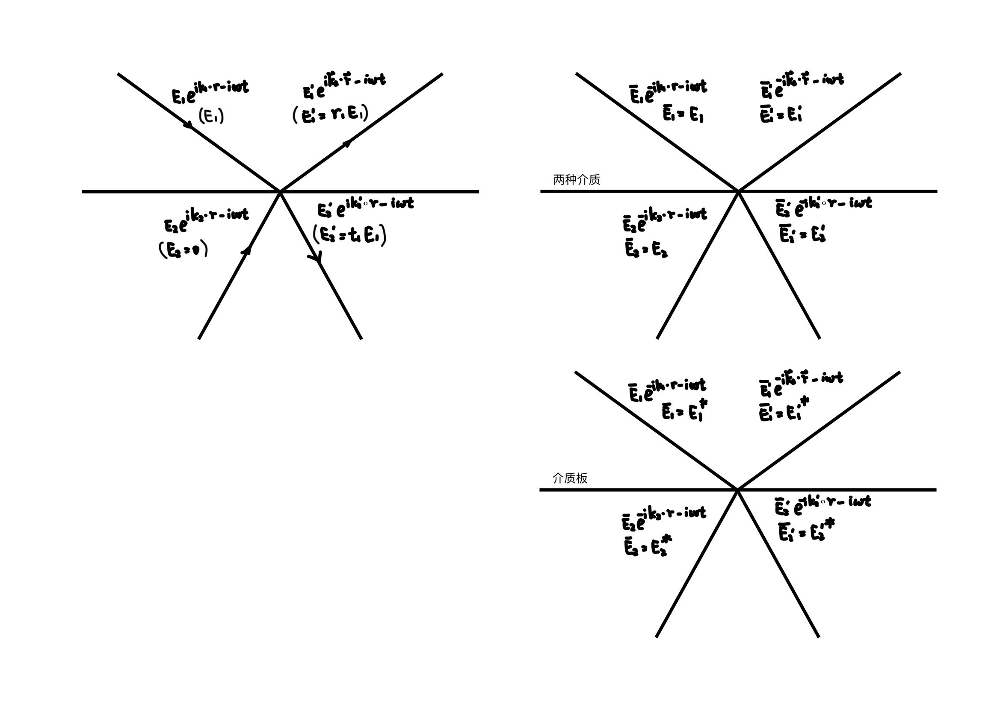

Stokes 公式#
假设某界面上下有四束平面电磁波，介质 1 中入射与出射电磁波为 \(\vec{E}_{1}, \vec{E}_{1}^{\prime}\)，介质 2 中入射与出射电磁波为 \(\vec{E}_{2}, \vec{E}_{2}^{\prime}\)。


简单起见，以下忽略 \(\mathrm{Re}\) 与 \(\vec{E}\)。当反向传播时采用 \(\bar{E}\) 作为记号，当 \(\bar{E}_{i}^{\prime} = E_{i}\) 时，\(\bar{E}_{i} = E_{i}^{\prime}\)。界面处的振幅反射率与振幅折射率定义为
如果界面上的反射与折射源于上下折射率的不同，相位偏移来源于 Maxwell 方程组，则满足
如果表示介质板的等效反射与折射系数，相位偏移源于介质板内部的光程差，则满足
介质交界面处的等效系数#
以 s 光为例，Maxwell 方程组的边界条件为


则考虑 \(t = 0\) 时刻空间中的电磁波，令所有的 \(k\) 反向，所有的 \(B\) 反向，则所有的 \(E\) 不变，上述方程依旧成立。注意上两张图中的 \(E_{1}\) 未必相等，而是由 Maxwell 方程组保证可能出现相等的情况。介质表面只有两个自由度（只有两束光是能任意选择大小的）。
介质板的等效系数#
介质板的相位偏移来源于内部光程，以介质薄膜为例，\(E_{2} = 0\)时

则考虑 \(t = 0\) 时刻空间中的电磁波，令所有的 \(k\) 反向，所有的 \(B\) 反向，则所有的 \(E\) 不变。由于光线反向传播所有的 \(\Delta \varphi\) 反号，\(r, t, r^{\prime}, t^{\prime}\) 为实数，因此新的 \(\bar{E}_{1}, \bar{E}_{1}^{\prime}, \bar{E}_{2}, \bar{E}_{2}^{\prime}\) 满足原本 \(E_{1}^{*}, E_{1}^{\prime *}, E_{2}^{*}, E_{2}^{\prime *}\) 间的关系。

构造#
假设初始只有 \(E_{1} = 1\) 入射，产生了 \(E_{1}^{\prime} = r_{1}, E_{2}^{\prime} = t_{1}\)。

对于两介质分界面，
构造 \(\bar{E}_{1}^{\prime} = r_{1}\)，产生 \(\bar{E}_{1} = r_{1}^{2}, \bar{E}_{2} = r_{1} t_{1}\)。将光线反向，振幅不变。
再构造 \(E_{2}^{\prime} = t_{1}\)，类似有 \(E_{1} = t_{1} t_{2}, E_{2} = t_{1} r_{2}\)。这两种情况叠加即为初始情况。

对于介质板的等效系数
构造 \(\bar{E}_{1}^{\prime} = r_{1}^{*}\)，则出射光为 \(\bar{E}_{1} = r_{1}^{*} r_{1}, \bar{E}_{2} = r_{1}^{*} t_{1}\)。反向后为 \(E_{1}^{\prime} = r_{1}, E_{1} = r_{1} r_{1}^{*}, E_{2} = r_{1} t_{1}^{*}\)。
类似构造 \(E_{2}^{\prime} = t_{1}, E_{1} = t_{1} t_{2}^{*}, E_{2} = t_{1} r_{2}^{*}\)。
以下命题成立#
反向的两束光线的电场矢量和磁场矢量无法同时相消。
对于介质交界面，如果允许存在 \(E_{1} e^{ i \vec{k}_{1} \cdot \vec{r} - i \omega t }, E_{1}^{\prime} e^{ i \vec{k}_{1}^{\prime} \cdot \vec{r} - i \omega t }, E_{2} e^{ i \vec{k}_{2} \cdot \vec{r} - i \omega t }, E_{2}^{\prime} e^{ i \vec{k}_{2}^{\prime} \cdot \vec{r} - i \omega t }\)，则允许存在 \(E_{1} e^{ - i \vec{k}_{1} \cdot \vec{r} - i \omega t }, E_{1}^{\prime} e^{ - i \vec{k}_{1}^{\prime} \cdot \vec{r} - i \omega t }, E_{2} e^{ - i \vec{k}_{2} \cdot \vec{r} - i \omega t }, E_{2}^{\prime} e^{ - i \vec{k}_{2}^{\prime} \cdot \vec{r} - i \omega t }\)。
对于介质板，如果允许存在 \(E_{1} e^{ i \vec{k}_{1} \cdot \vec{r} - i \omega t }, E_{1}^{\prime} e^{ i \vec{k}_{1}^{\prime} \cdot \vec{r} - i \omega t }, E_{2} e^{ i \vec{k}_{2} \cdot \vec{r} - i \omega t }, E_{2}^{\prime} e^{ i \vec{k}_{2}^{\prime} \cdot \vec{r} - i \omega t }\)，则允许存在 \(E_{1}^{*} e^{ - i \vec{k}_{1} \cdot \vec{r} - i \omega t }, E_{1}^{\prime *} e^{ - i \vec{k}_{1}^{\prime} \cdot \vec{r} - i \omega t }, E_{2}^{*} e^{ - i \vec{k}_{2} \cdot \vec{r} - i \omega t }, E_{2}^{\prime *} e^{ - i \vec{k}_{2}^{\prime} \cdot \vec{r} - i \omega t }\)。